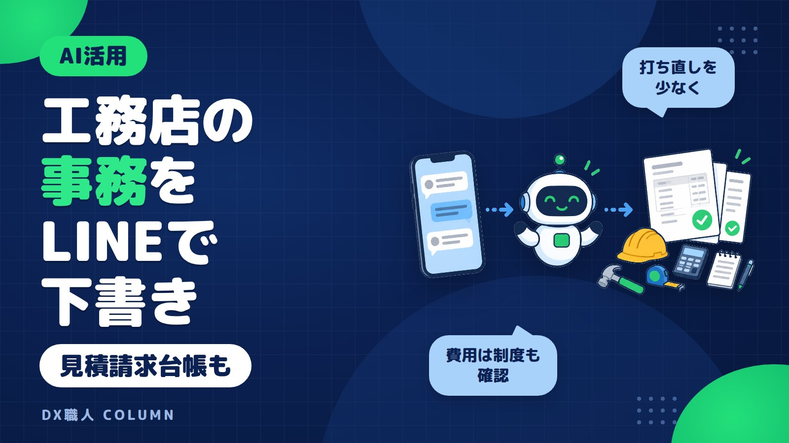
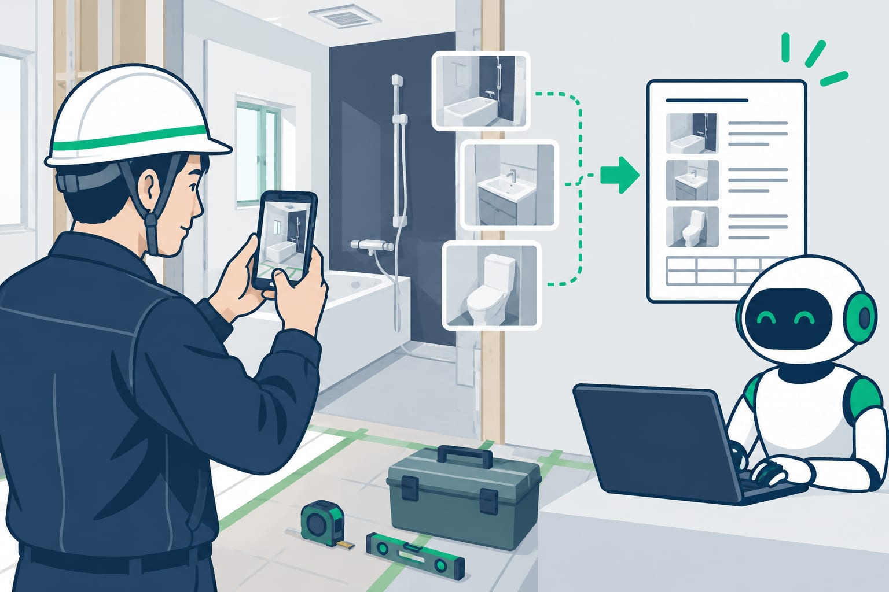

工務店の事務AIシステムで見積請求台帳をLINEで減らす
現場から戻ってから、見積の直し、請求書、台帳入力、電話メモの整理をまとめて行う工務店は多いです。この記事では、いつものLINEに送った内容をAIシステムが下書きに変える流れと、費用や補助金・助成金の確認点を整理します。新しいアプリを増やしたくない会社向けです。

この記事の要点
- LINEに送るだけで下書き化
- 見積・請求・台帳を整理
- 電話メモと現場連絡も残せる
- 費用は補助金・助成金を確認
- 小規模工務店でも始めやすい
工務店の事務AIシステムで減らせる作業
AI（人工知能）は、文章や写真から下書きを作る仕組みです。工務店の事務では、人が判断する前の「たたき台作り」に向いています。金額の最終確認や提出は、人が行います。
工務店の事務で時間がかかるのは、同じ内容の打ち直しです。現場メモを見積に入れ、工事完了後に請求へ移し、さらに台帳へ入力します。電話メモや現場写真も別々に残りがちです。
DX職人のAIシステムは、いつものLINEに送った内容をもとに下書きを作ります。新しいアプリを増やさず、スマホから始めやすいのが特徴です。
| 作業 | LINEに送る内容 | AIが作る下書き |
|---|---|---|
| 見積 | 工事内容、数量、写真 | 見積項目のたたき台 |
| 請求 | 完了日、追加工事、請求先 | 請求書の下書き |
| 日報 | 今日の作業、人数、写真 | 建設日報の下書き |
| 台帳 | 案件名、住所、担当、状況 | 一覧に入れる項目 |
| 電話メモ | 相手、用件、期限 | 折り返しや確認事項 |
見積は現場メモから下書きにする

見積は、現場で聞いた内容を事務所で思い出す作業になりがちです。紙のメモ、写真、電話で聞いた追加内容が分かれると、打ち直しに時間がかかります。
たとえばLINEに「A様邸、洗面台交換、既存撤去あり、材料は支給なし、写真3枚」と送ります。AIシステムは、工事項目、数量、備考欄の下書きを作ります。足りない情報があれば、確認項目として返します。
もちろん、単価や粗利の判断は会社側で行います。AIは、ゼロから見積書を作る前の整理係です。項目名の表記ゆれや、写真の見落としを減らす助けになります。
見積だけを詳しく見たい場合は、LINE見積書AIシステムで建設業の下書きを作るかんたん手順で、送信例と流れをまとめています。
請求は完了メモと見積データをつなげる
請求書は、見積書を見ながら別の書式へ入れ直すことが多い作業です。工事名、住所、金額、追加工事、支払条件などを毎回入力すると、手間もミスも増えます。
工事が終わったら、LINEに「A様邸、洗面台交換完了、追加で止水栓交換、11月15日引き渡し」と送ります。AIシステムは、見積の内容と完了メモを照らし合わせ、請求書の下書きに必要な項目を整理します。
会社名、登録番号、振込先などの固定情報は、あらかじめ決めた形で入れられます。毎回同じ文言を探す時間を減らせます。
スマホだけで請求書作成を進める流れは、LINE請求書自動作成を一人親方がスマホだけで進める手順でも解説しています。一人親方向けの記事ですが、小規模な工務店にも近い考え方です。
日報と台帳はLINEの一言から残す
日報と台帳は、後回しになりやすい作業です。夜にまとめて書こうとしても、作業時間、人数、材料、写真の場所を思い出す必要があります。
LINEに「本日、B現場、外壁下地、2名、9時から17時、雨で午後一部中断」と送ります。AIシステムは、日付、現場名、作業内容、人数、注意点を日報の形に整えます。
同じ内容を台帳にも使えます。案件名、住所、担当、進捗、写真、次の予定を一覧に残せば、あとで探しやすくなります。現場の写真も一緒に送れば、案件ごとの記録として扱いやすくなります。
現場メモから日報を作る具体的な流れは、LINE日報AIで現場メモから建設日報の下書きを作る手順で紹介しています。
電話メモと現場連絡を探しやすくする
工務店では、電話で決まることが多くあります。施主からの変更、協力業者からの到着時間、管理会社からの確認などです。紙のメモだけだと、あとで誰が何を言ったか探しにくくなります。
電話後にLINEへ「13時20分、C様より連絡、キッチン色を白へ変更希望、明日午前に確認して返信」と送ります。AIシステムは、相手、用件、期限、次の対応に分けてメモを作ります。
現場連絡も同じです。「明日D現場、朝一で養生、午後に電気業者」と送れば、作業予定の下書きになります。事務所と現場の間で、確認事項をそろえやすくなります。
大切なのは、完璧な文章で送らないことです。短い一言でも、案件名と用件があれば整理できます。LINEなら移動中や車を降りた直後にも残しやすいです。
新しい画面を覚えないLINE運用の流れ
AIシステムと聞くと、難しい管理画面を想像する方もいます。DX職人では、入口をLINEにできます。いつものトークに送るだけなら、現場担当も事務担当も始めやすくなります。
基本の流れは次の通りです。
- 現場や事務所からLINEに送る
- AIが内容を読み取り、不足項目を聞く
- 見積、請求、日報、台帳の下書きを返す
- 人が確認して、保存や発行に進める
たとえば、現場担当はスマホから写真とメモを送ります。事務所では、下書きを見て金額や表記を確認します。スマホで送って、事務所のパソコンで確認する流れにもできます。
最初から全員の使い方をそろえる必要はありません。まずは「見積だけ」「日報だけ」のように、1つの作業から始めると混乱しにくいです。
費用は補助金・助成金の確認対象になり得る
AIシステムの費用は、使う範囲で変わります。初期設定、帳票の調整、月額利用料、既存データの取り込みなど、必要な内容が会社ごとに違うためです。
導入費は、IT導入補助金などの補助金や、助成金の確認対象になり得る場合があります。ただし、対象経費、申請時期、必要書類は年度や制度で変わります。最新の公募要領で確認することが大切です。
「必ず使える」「全額戻る」とは言えません。制度ごとに要件があるので、ご相談の際に確認します。現在の事務作業、使いたい機能、予定している時期を聞いたうえで、確認すべき制度を整理します。
費用を見るときは、月額だけで判断しないほうが安全です。見積の打ち直し、請求の転記、日報の作成、台帳入力にかかる時間もあわせて見ると、判断しやすくなります。
小さく始めるなら最初の範囲を決める
工務店の事務AIシステムは、一度にすべてを変えるより、毎日困っている作業から始めるほうが合います。よくある入口は、見積、請求、日報、台帳のどれか1つです。
選び方の目安はシンプルです。
- 現場メモの整理が大変なら、見積から始める
- 工事後の転記が多いなら、請求から始める
- 夜の日報が負担なら、日報から始める
- 案件情報を探す時間が長いなら、台帳から始める
紙や今の表計算をすぐにやめる必要はありません。最初は併用しながら、LINEで送った内容がどこまで下書きになるかを確認します。
AIは、社長や事務担当の代わりに判断するものではありません。毎日の打ち直しを減らし、人が確認すべきところに時間を使うための道具です。工務店の事務を軽くしたい場合は、まず「どの作業をLINEに送るか」から決めると進めやすくなります。
よくある質問
工務店の事務作業はAIでどこまで減らせますか？
見積、請求、日報、台帳、電話メモの下書き化に使えます。最終判断や金額確認は人が行い、AIは打ち直しの前段を減らす役割です。
LINEだけで見積や請求の下書きは作れますか？
可能です。現場メモ、写真、完了報告などをLINEに送ると、AIシステムが必要項目を整理します。不足があれば確認事項として返せます。
工務店の台帳入力にもAIシステムは使えますか？
使えます。案件名、住所、担当、進捗、写真、次回予定などをLINEから送り、台帳に入れる形へ整えます。あとで探しやすくする目的に向いています。
AIシステム導入費に補助金や助成金は使えますか？
確認対象になり得る場合があります。ただし、対象経費や時期は年度や制度で変わります。最新情報を見ながら、ご相談時に確認します。
パソコンが苦手な担当者がいても使えますか？
入口をLINEにすれば、スマホからメモや写真を送るだけで始めやすくなります。確認や発行だけ事務所のパソコンで行う流れにもできます。